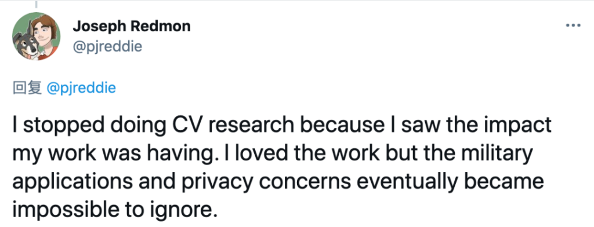
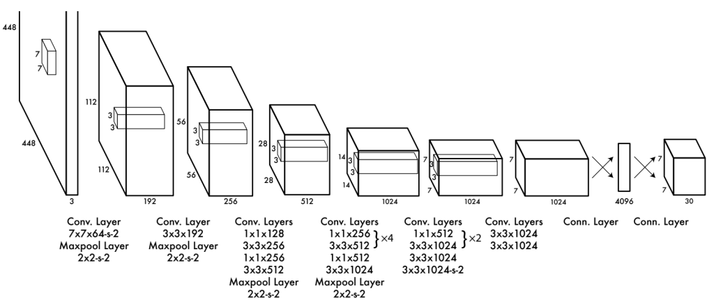
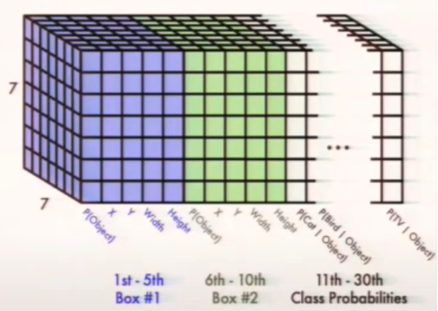
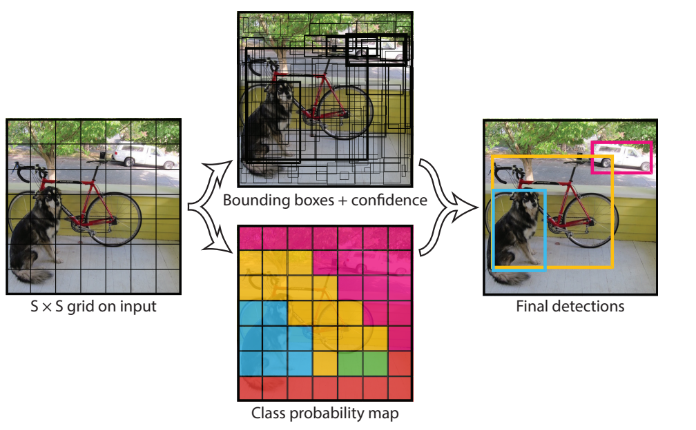
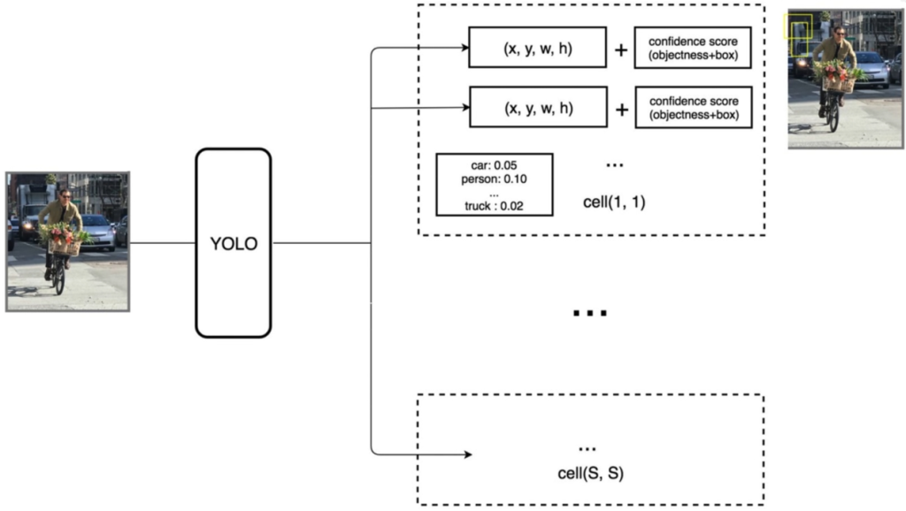
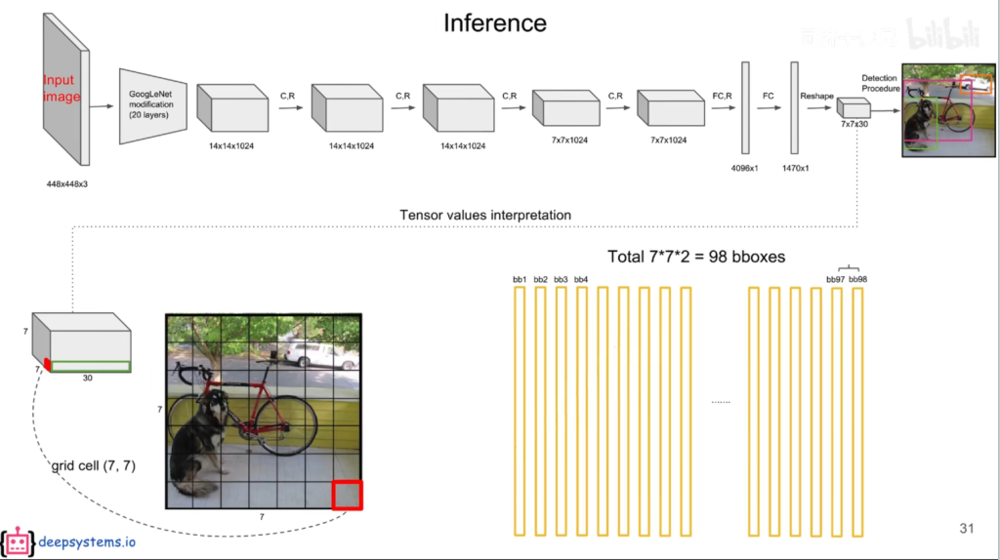
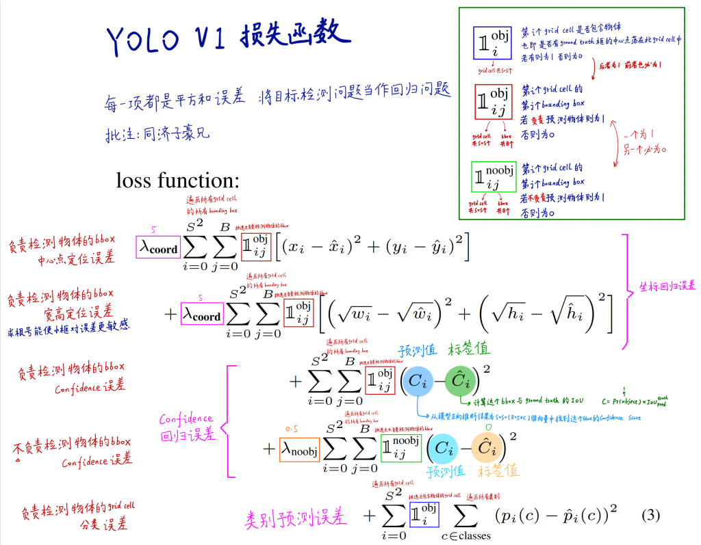
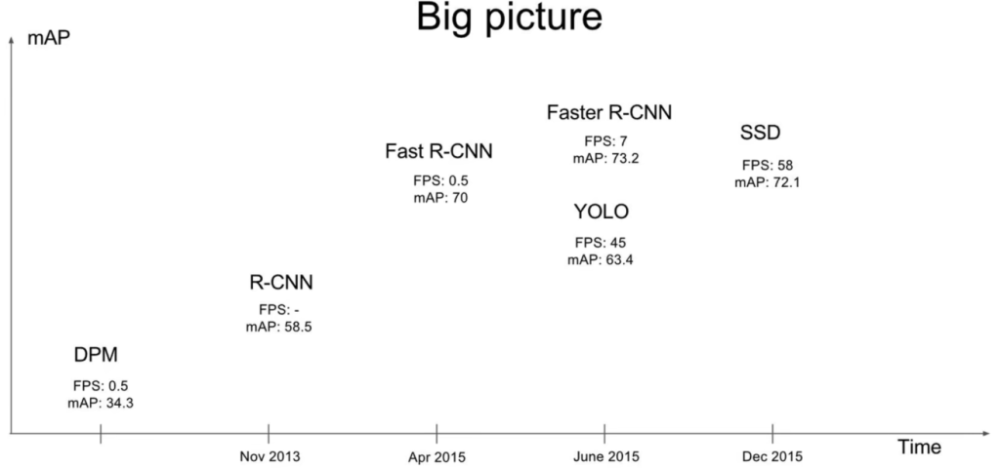
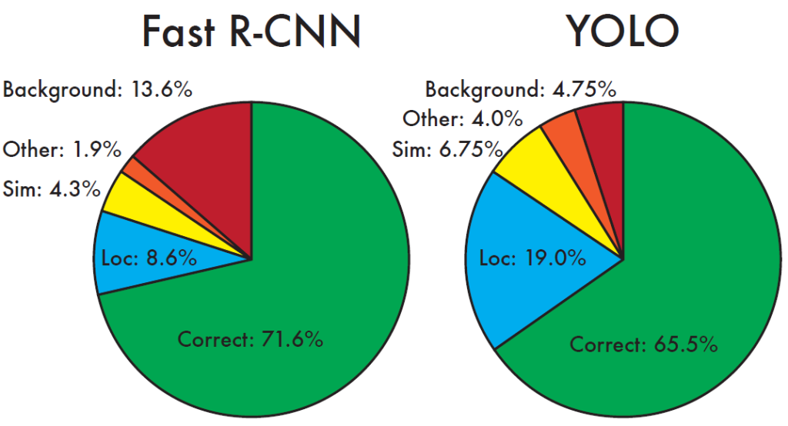

YOLO v1笔记
学习内容来源：同济子豪兄的个人空间_哔哩哔哩_bilibili
作者介绍
Joseph Redmon，You Only Look Once、YOLO9000、YOLOv3。
2020年起不再从事计算机视觉研究。

预测阶段（前向判断）

输入一个4484483的图像，经过一系列的卷积和池化操作，得到一个771024的feature map，将其拉平，送入4096个神经元的FC层中，输出结果输入到1470（7730）个神经元的FC层中，输出1470维向量，reshape成7730的tensor。
why7*7*30?论文中将图像划分为SS个网格，这里S取7。每个grid cell（网格）可以预测出B个bounding box（预测框，包含x,y【中心坐标】,h,w【宽高】,c【置信度confidence，包含物体的概率，用框线粗细表示，粗的置信度高】），这里B取2。**30=2\5+20。2：2个框；5：5个参数；20：Pascal VOC中20个类别的条件概率**（该grid cell在包含物体情况下是xx的概率）。
输出7730模型结构
如何定义bounding box是属于这个grid cell?只要该bounding box的中心是在这个grid cell中即可。
当框内含有物体时，能计算某物体概率。将每个bounding box的置信度×条件概率，获得每个bounding box各类别的概率。值得注意的是，每个grid cell只能预测一个物体，77最多只能识别*49个物体。


预测阶段后处理——NMS非极大值抑制
使用bounding box的置信度，即该box中存在物体的概率，乘以是该种物体的条件概率，得到该种物体的全概率。因此每个grid cell可以得到2个20维的全概率，或者说每个种类有772=98个概率，最终生成772*20个概率。
对于小于阈值（如0.2）的值直接设为0。
对于非0

当两个框的交并比IoU（两个框的并部分/两个框的交部分）>0.5时，可以认定两个框重复识别了同一个物体，将低概率的框去除（将其条件概率置为0），否则暂时将其保留，继续进行比较，直至将98个bounding box比较完，最后保留n个框。
注意，NMS操作仅在预测阶段进行！
训练阶段（反向传播）
每个grid cell只能代表一个物体，因此最多有49个物体。当ground-truth的中心点落在grid cell中时，生成的两个bounding box中，只使用与ground-truth的IoU较大那个进行拟合物体，另一个则弃之不用。当ground-truth中心点不在grid cell中，则直接放弃这两个bounding box。
损失函数
损失函数由5部分组成。

5项均为回归问题的损失函数，其中
- 式1：负责检测物体的bbox中心点定位误差；
- 式2：负责检测物体的bbox宽高定位误差，其中求根号能使小框对误差更敏感，大框的偏差减小，对大框更公平；前两项是对坐标回归误差；
- 式3：负责检测物体的bbox 的置信度confidence误差，标签值即为bbox和ground truth的IoU，越接近1越好；
- 式4：不负责检测物体的bbox 的置信度confidence误差，越接近0越好；3、4是置信度回归误差；
- 式5：负责检测物体的grid cell分类误差，即类别预测误差。
权重设置：对于负责定位检测的${\lambda}{coord}$取5，不负责检测物体的${\lambda}{noobj}$则取0.5。
值得注意的是，负责检测物体的$\mathbb{1}^{obj}{i}$与$\mathbb{1}^{obj}{ij}$同为0/1，而$\mathbb{1}^{noobj}_{ij}$则相反。
论文细节
对比其他目标检测方法，在实时目标检测中，YOLO是最准的，在非实时目标检测中，YOLO是最快的。初代版本YOLO的精度位于R-CNN与Fast R-CNN之间，但其速度很快，FPS达到45。

Fast R-CNN只能看到RoI，区分背景能力差，但是精确定位性能好；YOLO能看到全图，区分背景和物体能力强，但精确定位能力差。

论文精读
Two stage的算法是先提取候选框，再对其进行甄别，而YOLO则是直接输出检测结果。
V1-V3版本的作者均为Joseph Redmon。